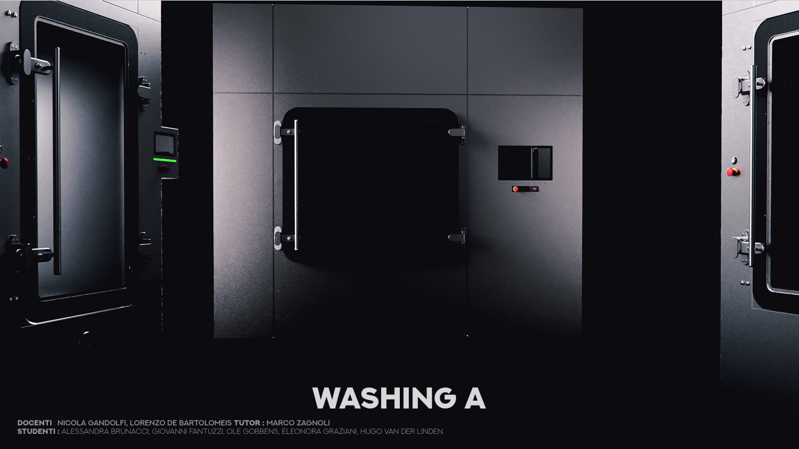
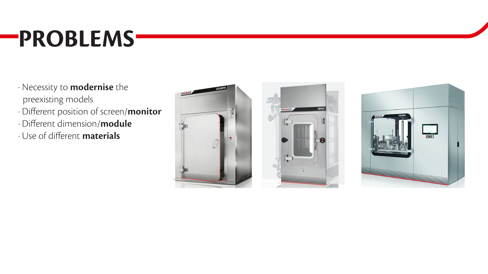
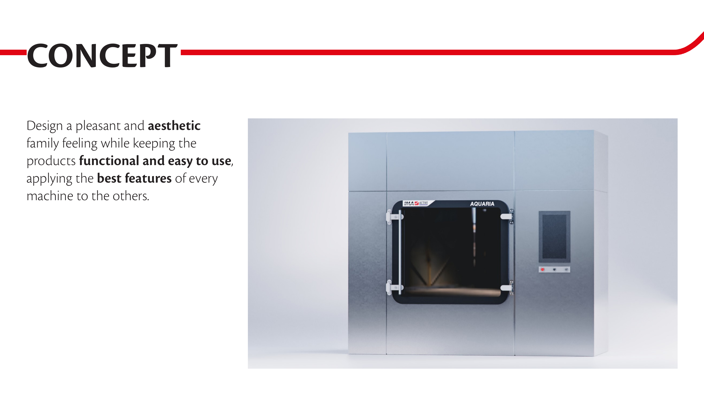
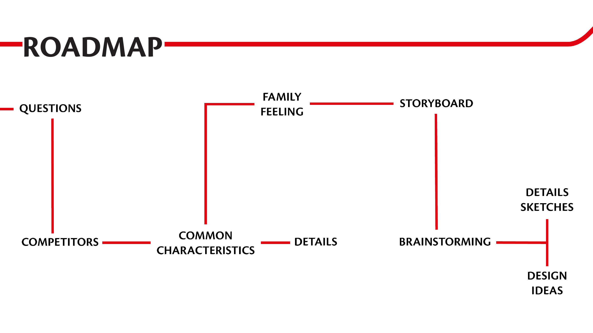

2022—2023 · University of Bologna
Washing
A.
A coherent industrial washing-machine family designed for clarity, usability and a modern shared identity.
One family,
three machines.
Washing A was developed as a group project during my exchange at the University of Bologna. The brief was to bring a clear family feeling to the Venus, Atlantis and Aquaria washing-machine series, while acknowledging their different sizes, configurations and use cases.
The design direction creates visual continuity across the range, with a shared graphic language, more contemporary materials and a clearer screen position.
Consistency without
compromise.
The final concept balances an approachable, family-like character with the practical demands of industrial equipment. A large dark-framed door, vertically composed interface and restrained colour accents establish a recognisable character across the range.
Rather than treating each machine as a separate object, the project used common details and proportions to build a coherent product family while keeping every model functional and easy to use.


